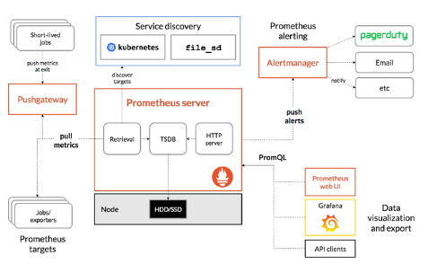
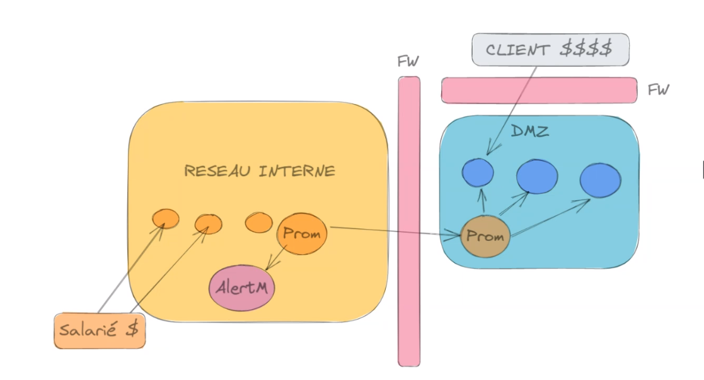
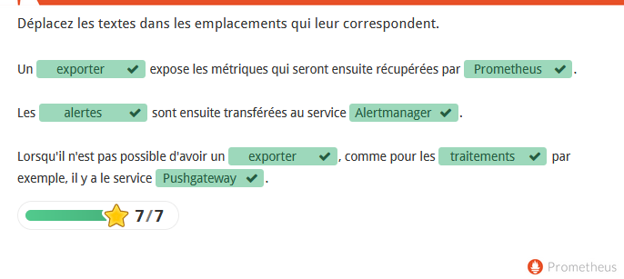
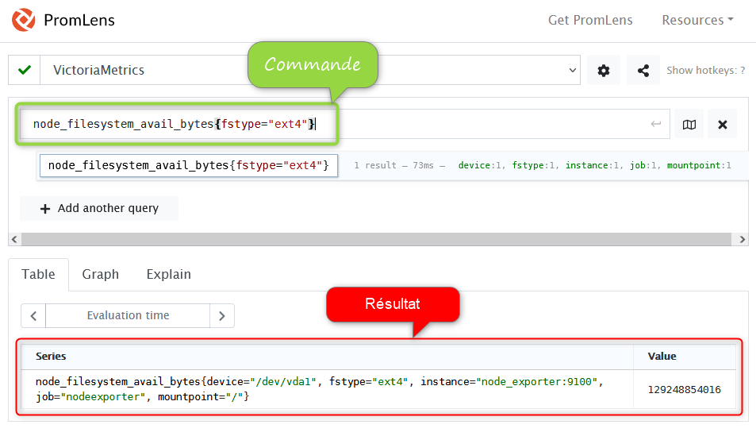
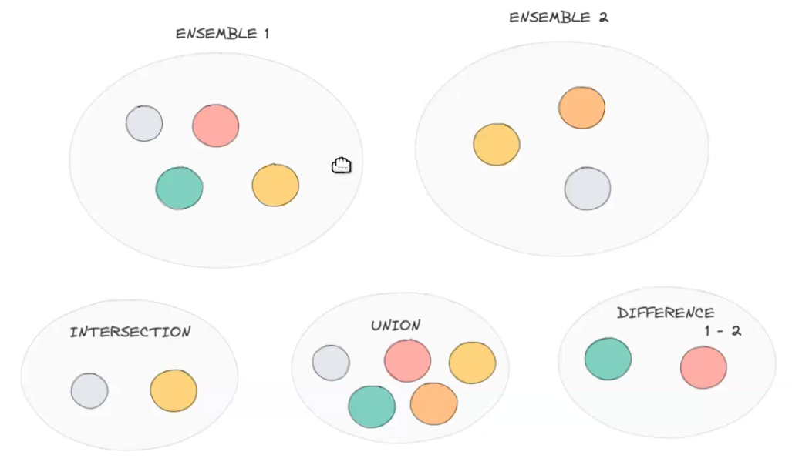
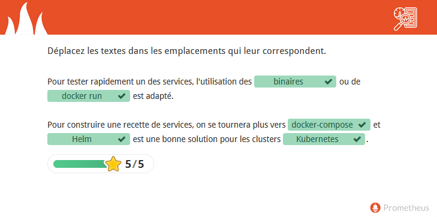

2021-08-11
Formateur: Alexandre Chaussier
2e partie de 3 formations:


Prometheus est composé des 3 grandes parties:
Prometheus : collecte, stockage ou transfert, exposition, alertesAlertmanager : gestion des notificationsPushgateway : réception de métriques (sonde)TSDB: Time Series DataBase, “Une Time Series DataBase est une base de données optimisée pour le stockage de données horodatées, telles que les données générées par l’internet des objets. Découvrez la définition complète d’une Time Series DataBase, ses différences avec les autres bases de données, ses fonctionnalités spécifiques, ses avantages pour l’entreprise, ainsi que le classement des bases de données TimeSeries les plus populaires.”

Un serveur Prometheus de relai est placé dans la DMZ, permet de:

Prometheus permet d’utiliser quatre types de données pour les métriques :
C’est une valeur qui ne peut qu’augmenter ou être remise à 0, dans le cas de redémarrage par exemple
Exemple: nombre de requêtes, d’erreurs, …
# HELP node_softnet_processed_total Number of processed packets
# TYPE node_softnet_processed_total counter
node_softnet_processed_total{cpu="0"} 2.40324588e+08
node_softnet_processed_total{cpu="1"} 2.40305375e+08
node_softnet_processed_total{cpu="2"} 2.38303536e+08
node_softnet_processed_total{cpu="3"} 2.37670081e+08C’est une valeur entière qui peut être incrémentée ou décrémentée, à la différence du compteur
Exemple: les consommations mémoire, les températures, …
# HELP node_entropy_available_bits Bits of available entropy.
# TYPE node_entropy_available_bits gauge
node_entropy_available_bits 3941Permet de distribuer des valeurs sur un ensemble de poches.
Par exemple, pour connaître la répartition de requêtes par leur temps d’exécution.
Deux métriques sont automatiquement rajoutées en plus des poches :
sum : la somme des valeurscount : le nombre de valeursOn peut ensuite appliquer diverses fonctions.
Ex: le calcul de percentiles, via histogram_quantile()
Exemple, un histogramme nommé http_request_duration_seconds :
# HELP http_request_duration_seconds Request duration histogram
# TYPE http_request_duration_seconds histogram
http_request_duration_seconds_bucket{le="0.5"} 0
http_request_duration_seconds_bucket{le="1"} 1
http_request_duration_seconds_bucket{le="2"} 2
http_request_duration_seconds_bucket{le="3"} 3
http_request_duration_seconds_bucket{le="5"} 3
http_request_duration_seconds_bucket{le="+Inf"} 3
http_request_duration_seconds_sum 6
http_request_duration_seconds_count 3Ce type de métrique est l’équivalent d’un appel à histogram_quantile() mais traité coté client
sum et count , sont automatiquement ajoutées.Je préconise l’utilisation des histogrammes pour ces besoins
---
version: '3.4'
x-logging:
&default-logging
driver: 'json-file'
options:
max-size: "${LOGGING_MAX_SIZE}"
max-file: "${LOGGING_MAX_FILE}"
volumes:
alertmanager_data: {}
grafana_png: {}
inbucket_config: {}
inbucket_data: {}
postgres_data: {}
prometheus_data: {}
prometheus_fed_data: {}
promlens_data: {}
victoriametrics_data: {}
services:
alertmanager:
image: "${ALERTMANAGER_IMAGE_NAME}:${ALERTMANAGER_IMAGE_VERSION}"
command:
- '--config.file=/etc/alertmanager/config.yml'
- '--storage.path=/alertmanager'
- '--web.external-url=http://alertmanager.localhost'
depends_on:
- 'traefik'
labels:
- 'traefik.enable=true'
- 'traefik.http.routers.alertmanager.rule=Host(`alertmanager.localhost`)'
- 'traefik.http.routers.alertmanager.entrypoints=web'
logging: *default-logging
restart: 'unless-stopped'
volumes:
- 'alertmanager_data:/alertmanager'
- './config/alertmanager/config.yml:/etc/alertmanager/config.yml:ro'
- '/etc/ssl/certs:/etc/ssl/certs:ro'
- '/etc/pki:/etc/pki:ro'
blackbox_exporter:
image: "${BLACKBOX_EXPORTER_IMAGE_NAME}:${BLACKBOX_EXPORTER_IMAGE_VERSION}"
depends_on:
- 'traefik'
labels:
- 'traefik.enable=true'
- 'traefik.http.routers.blackbox_exporter.rule=Host(`blackbox-exporter.localhost`)'
- 'traefik.http.routers.blackbox_exporter.entrypoints=web'
logging: *default-logging
restart: 'unless-stopped'
volumes:
- './config/blackbox_exporter/config.yml:/etc/blackbox_exporter/config.yml:ro'
cadvisor:
image: "${CADVISOR_IMAGE_NAME}:${CADVISOR_IMAGE_VERSION}"
command:
- '/usr/bin/cadvisor'
- '-port 8080'
- '-logtostderr'
depends_on:
- 'traefik'
labels:
- 'traefik.enable=true'
- 'traefik.http.routers.cadvisor.rule=Host(`cadvisor.localhost`)'
- 'traefik.http.routers.cadvisor.entrypoints=web'
logging: *default-logging
privileged: true
restart: 'unless-stopped'
user: 'root'
volumes:
- '/:/rootfs:ro'
- '/cgroup/:/cgroup:ro'
- '/dev/disk/:/dev/disk:ro'
- '/dev/kmsg/:/dev/kmsg:ro'
- '/proc:/host/proc:ro'
- '/sys:/sys:ro'
- '/var/lib/docker/:/var/lib/docker:ro'
- '/var/run:/var/run:rw'
grafana:
image: "${GRAFANA_IMAGE_NAME}:${GRAFANA_IMAGE_VERSION}"
depends_on:
- 'traefik'
env_file:
- './env/grafana.env'
labels:
- 'traefik.enable=true'
- 'traefik.http.routers.grafana.rule=Host(`grafana.localhost`)'
- 'traefik.http.routers.grafana.entrypoints=web'
logging: *default-logging
restart: 'unless-stopped'
volumes:
- 'grafana_png:/var/lib/grafana/png'
- './config/grafana/provisionning/datasources:/etc/grafana/provisioning/datasources'
- './config/grafana/provisionning/dashboards:/etc/grafana/provisioning/dashboards'
- './config/grafana/provisionning/plugins:/etc/grafana/provisioning/plugins'
- './config/grafana/dashboards:/var/lib/grafana/dashboards'
inbucket:
image: "${INBUCKET_IMAGE_NAME}:${INBUCKET_IMAGE_VERSION}"
depends_on:
- 'traefik'
labels:
- 'traefik.enable=true'
- 'traefik.http.routers.inbucket.rule=Host(`inbucket.localhost`)'
- 'traefik.http.routers.inbucket.entrypoints=web'
- 'traefik.http.services.inbucket.loadbalancer.server.port=9000'
logging: *default-logging
restart: 'unless-stopped'
volumes:
- 'inbucket_config:/config'
- 'inbucket_data:/storage'
node_exporter:
image: "${NODE_EXPORTER_IMAGE_NAME}:${NODE_EXPORTER_IMAGE_VERSION}"
command:
- '--path.procfs=/host/proc'
- '--path.rootfs=/rootfs'
- '--path.sysfs=/host/sys'
- '--collector.filesystem.ignored-mount-points=^/(dev|etc|host|proc|run|sys|var\/lib\/docker\/containers\/.*\/mounts\/shm)($$|/)'
- '--collector.filesystem.ignored-fs-types=^(autofs|binfmt_misc|cgroup|configfs|debugfs|devpts|devtmpfs|fusectl|hugetlbfs|mqueue|overlay|proc|procfs|pstore|rpc_pipefs|securityfs|squashfs|sysfs|tracefs)$$'
- '--collector.mountstats'
- '--collector.systemd'
- '--collector.tcpstat'
- '--collector.time'
- '--collector.uname'
- '--no-collector.powersupplyclass'
depends_on:
- 'traefik'
labels:
- 'traefik.enable=true'
- 'traefik.http.routers.node_exporter.rule=Host(`node-exporter.localhost`)'
- 'traefik.http.routers.node_exporter.entrypoints=web'
logging: *default-logging
privileged: true
restart: 'unless-stopped'
user: 'root'
volumes:
- '/:/rootfs:ro,rslave'
- '/cgroup/:/cgroup:ro'
- '/dev/disk/:/dev/disk:ro'
- '/proc:/host/proc:ro'
- '/run:/run:ro'
- '/sys:/host/sys:ro'
postgres:
image: "${POSTGRES_IMAGE_NAME}:${POSTGRES_IMAGE_VERSION}"
env_file:
- './env/postgres.env'
logging: *default-logging
restart: 'unless-stopped'
volumes:
- 'postgres_data:/var/lib/postgresql/data'
prometheus:
image: "${PROMETHEUS_IMAGE_NAME}:${PROMETHEUS_IMAGE_VERSION}"
command:
- '--config.file=/etc/prometheus/prometheus.yml'
- '--storage.tsdb.path=/prometheus'
- '--storage.tsdb.retention=30m'
- '--web.external-url=http://prometheus.localhost'
- '--web.enable-lifecycle'
depends_on:
- 'traefik'
labels:
- 'traefik.enable=true'
- 'traefik.http.routers.prometheus.rule=Host(`prometheus.localhost`)'
- 'traefik.http.routers.prometheus.entrypoints=web'
logging: *default-logging
restart: 'unless-stopped'
volumes:
- './config/prometheus/:/etc/prometheus/'
- 'prometheus_data:/prometheus/'
process_exporter:
image: "${PROCESS_EXPORTER_IMAGE_NAME}:${PROCESS_EXPORTER_IMAGE_VERSION}"
command:
- '-procfs=/host/proc'
- '-config.path=/etc/config.yml'
labels:
- 'traefik.enable=true'
- 'traefik.http.routers.process_exporter.rule=Host(`process-exporter.localhost`)'
- 'traefik.http.routers.process_exporter.entrypoints=web'
logging: *default-logging
privileged: true
restart: 'unless-stopped'
volumes:
- './config/process-exporter/config.yml:/etc/config.yml'
- '/proc:/host/proc:ro'
prometheus_fed:
image: "${PROMETHEUS_IMAGE_NAME}:${PROMETHEUS_IMAGE_VERSION}"
command:
- '--config.file=/etc/prometheus/prometheus-fed.yml'
- '--storage.tsdb.path=/prometheus'
- '--storage.tsdb.retention=30m'
- '--web.external-url=http://prometheus-fed.localhost'
- '--web.enable-lifecycle'
depends_on:
- 'traefik'
labels:
- 'traefik.enable=true'
- 'traefik.http.routers.prometheus_fed.rule=Host(`prometheus-fed.localhost`)'
- 'traefik.http.routers.prometheus_fed.entrypoints=web'
logging: *default-logging
restart: 'unless-stopped'
volumes:
- './config/prometheus/:/etc/prometheus/'
- 'prometheus_fed_data:/prometheus/'
pushgateway:
image: "${PUSHGATEWAY_IMAGE_NAME}:${PUSHGATEWAY_IMAGE_VERSION}"
depends_on:
- 'traefik'
labels:
- 'traefik.enable=true'
- 'traefik.http.routers.pushgateway.rule=Host(`pushgateway.localhost`)'
- 'traefik.http.routers.pushgateway.entrypoints=web'
logging: *default-logging
restart: 'unless-stopped'
victoriametrics:
image: "${VICTORIAMETRICS_IMAGE_NAME}:${VICTORIAMETRICS_IMAGE_VERSION}"
command:
- '--storageDataPath=/storage'
- '--graphiteListenAddr=:2003'
- '--opentsdbListenAddr=:4242'
- '--httpListenAddr=:8428'
- '--influxListenAddr=:8089'
logging: *default-logging
restart: 'unless-stopped'
volumes:
- 'victoriametrics_data:/storage'
promlens:
image: "${PROMLENS_IMAGE_NAME}:${PROMLENS_IMAGE_VERSION}"
command:
#- "--license.key=${PROMLENS_LICENSE_KEY}"
- '--shared-links.sql.driver=sqlite3'
- '--shared-links.sql.dsn=/data/promlens-links.db'
#- '--grafana.url=http://grafana:3000'
#- '--grafana.api-token=${PROMLENS_GRAFANA_API_KEY}'
- '--web.default-prometheus-url=http://victoriametrics:8428'
- '--web.external-url=http://promlens.localhost'
depends_on:
- 'traefik'
labels:
- 'traefik.enable=true'
- 'traefik.http.routers.promlens.rule=Host(`promlens.localhost`)'
- 'traefik.http.routers.promlens.entrypoints=web'
- 'traefik.http.services.promlens.loadbalancer.server.port=8080'
logging: *default-logging
restart: 'unless-stopped'
volumes:
- 'promlens_data:/data'
flask_app:
build:
context: 'docker/flask-app'
depends_on:
- 'traefik'
labels:
- 'traefik.enable=true'
- 'traefik.http.routers.flask_app.rule=Host(`flask-app.localhost`)'
- 'traefik.http.routers.flask_app.entrypoints=web'
logging: *default-logging
restart: 'unless-stopped'
flask_app_scrap:
build:
context: 'docker/flask-app-scrap'
depends_on:
- 'traefik'
- 'flask_app'
logging: *default-logging
restart: 'unless-stopped'
# Reverse proxy
traefik:
image: "${TRAEFIK_IMAGE_NAME}:${TRAEFIK_IMAGE_VERSION}"
command:
- '--api.insecure=true'
- '--metrics.prometheus=true'
- '--metrics.prometheus.addEntryPointsLabels=true'
- '--metrics.prometheus.addServicesLabels=true'
- '--providers.docker=true'
- '--providers.docker.exposedbydefault=false'
- '--entrypoints.web.address=:80'
ports:
- '80:80'
- '8080:8080'
restart: 'unless-stopped'
volumes:
- '/var/run/docker.sock:/var/run/docker.sock:ro'Avec PRomQL, exemple de requête:
node_filesystem_avail_bytes{fstype="ext4"}
retourne:


and logique# Retourne toutes les cibles qui étaient déjà définies la veille
up offset 1d and up
or# Retourne toutes les cibles de la veille plus celles qui ont été ajoutées depuis
up offset 1d or upunless
# Retourne toutes les cibles qui ont été supprimées depuis la veille
up offset 1d unless up
---
version: '3'
services:
alertmanager:
container_name: alertmanager
image: prom/alertmanager:latest
ports: [ "9093:9093" ]
prometheus:
container_name: prometheus
image: prom/prometheus:latest
ports: [ "9090:9090" ]
pushgateway:
container_name: pushgateway
image: prom/pushgateway:latest
ports: [ "9091:9091" ]
...